"我拍电影的时候，投资方会说：你一个女的，能拍好吗？"
——李玉，凤凰网《非常道》访谈
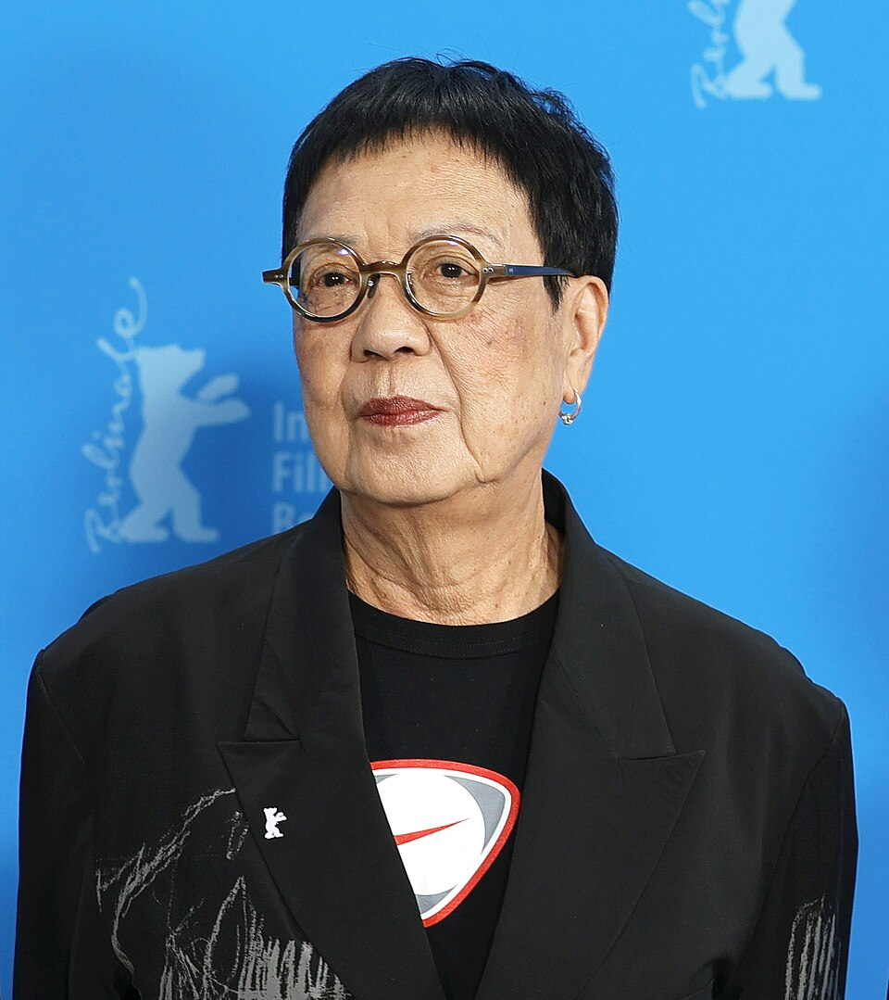
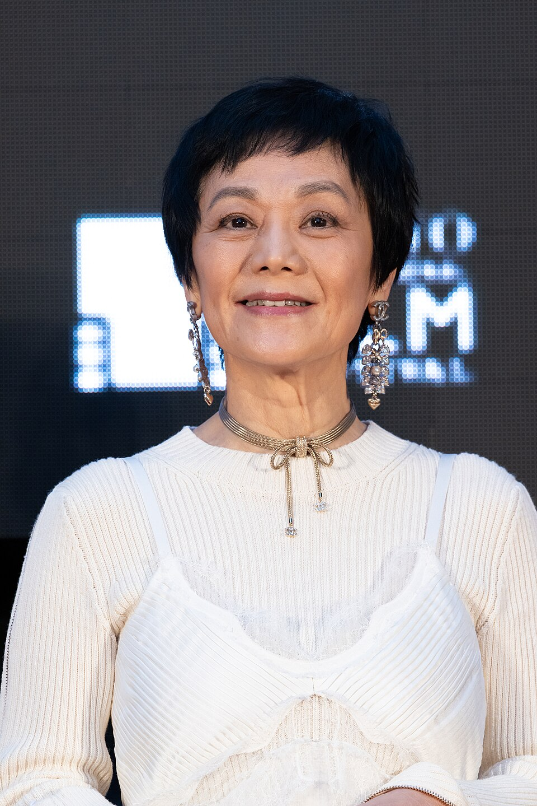
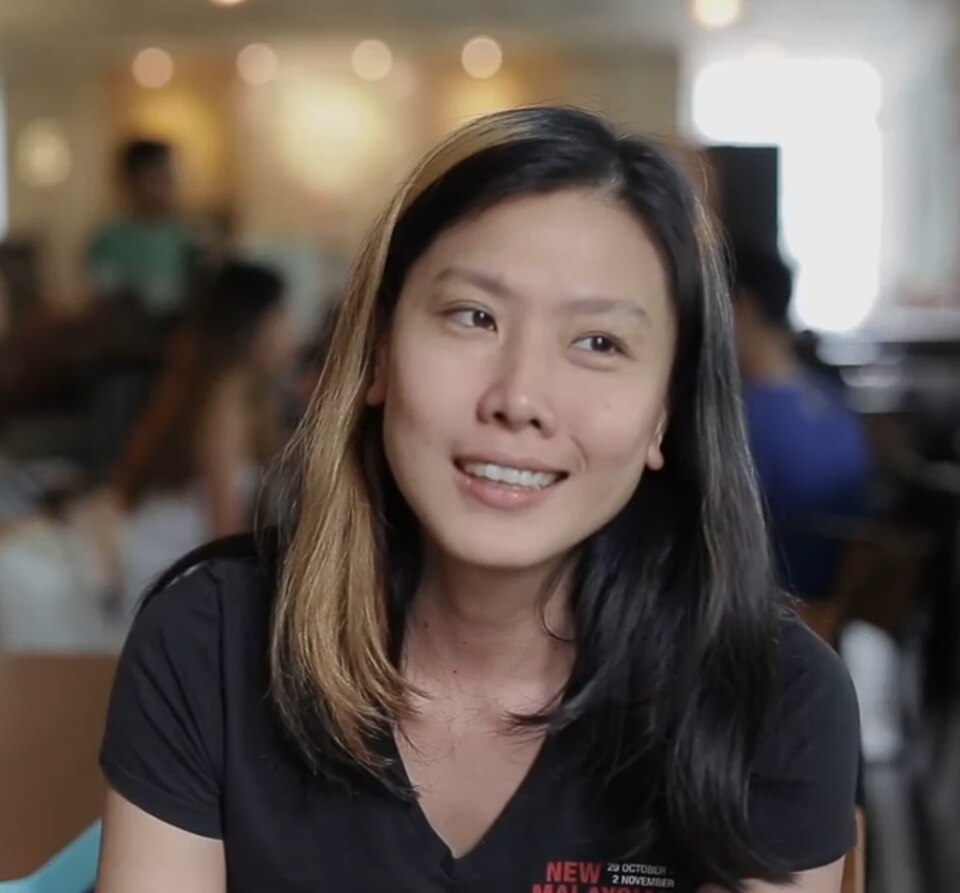
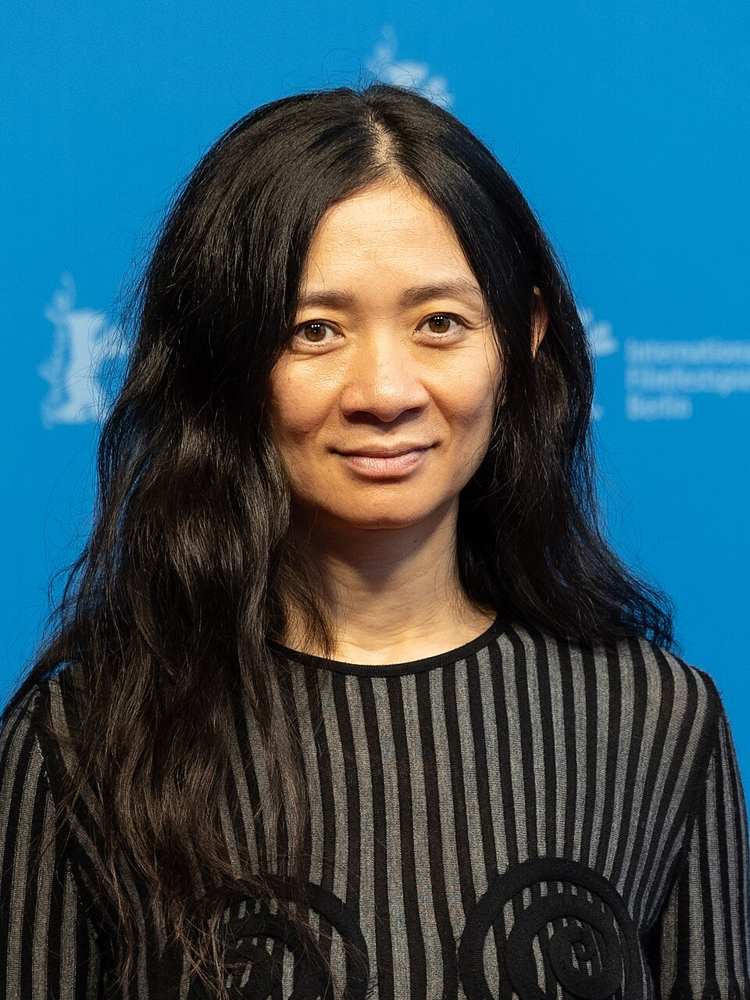
你也许说不出她们的名字……
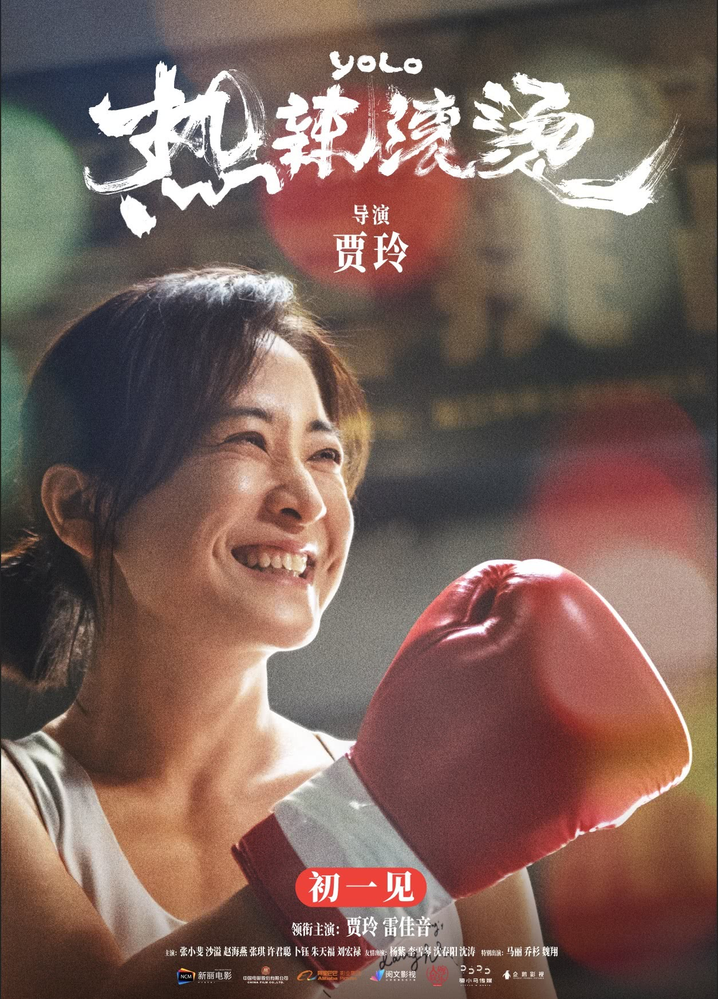
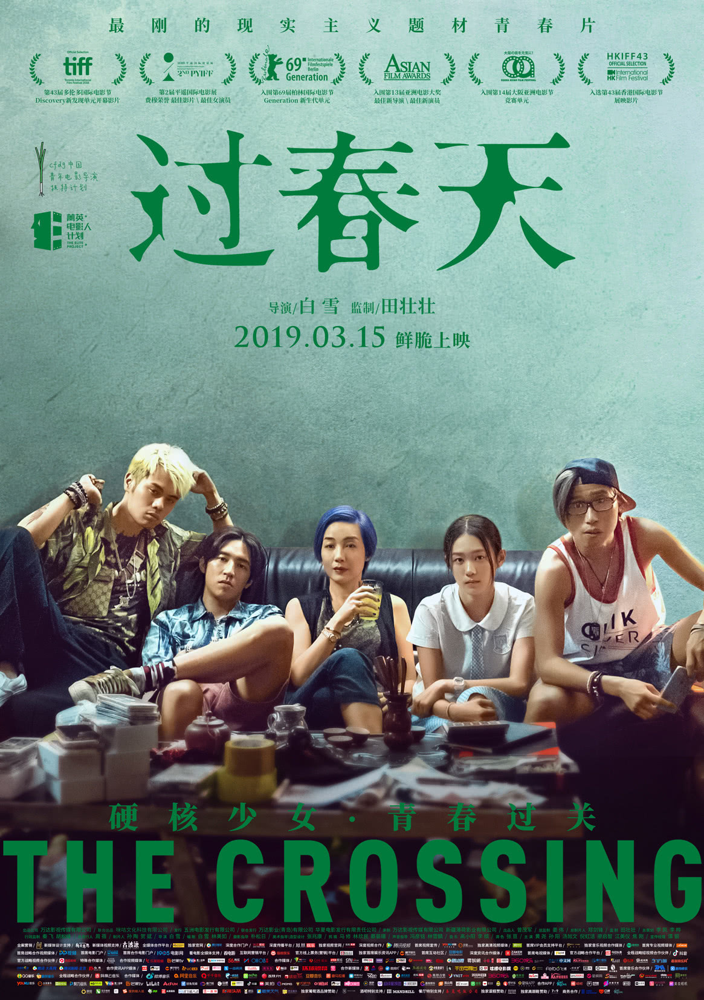
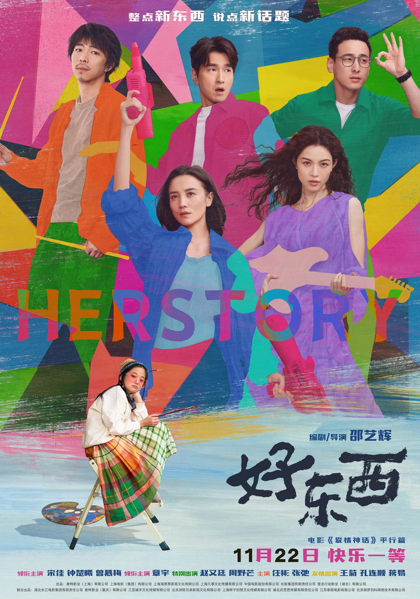
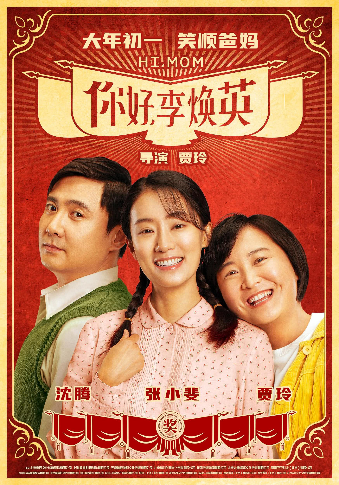
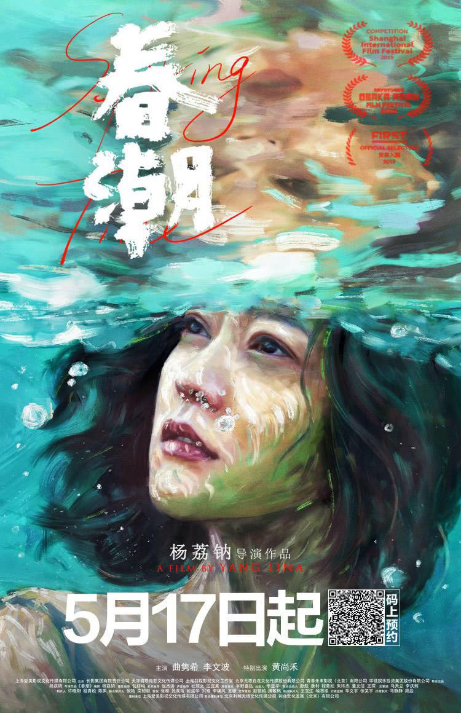
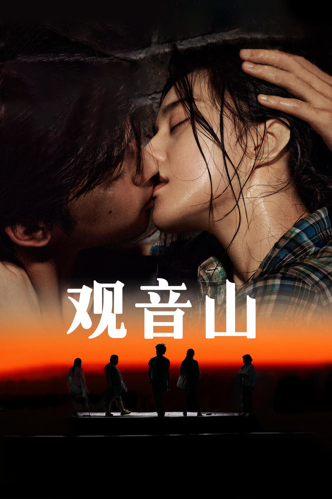
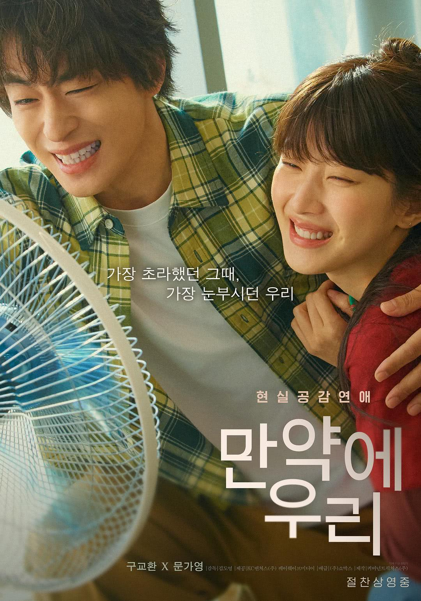
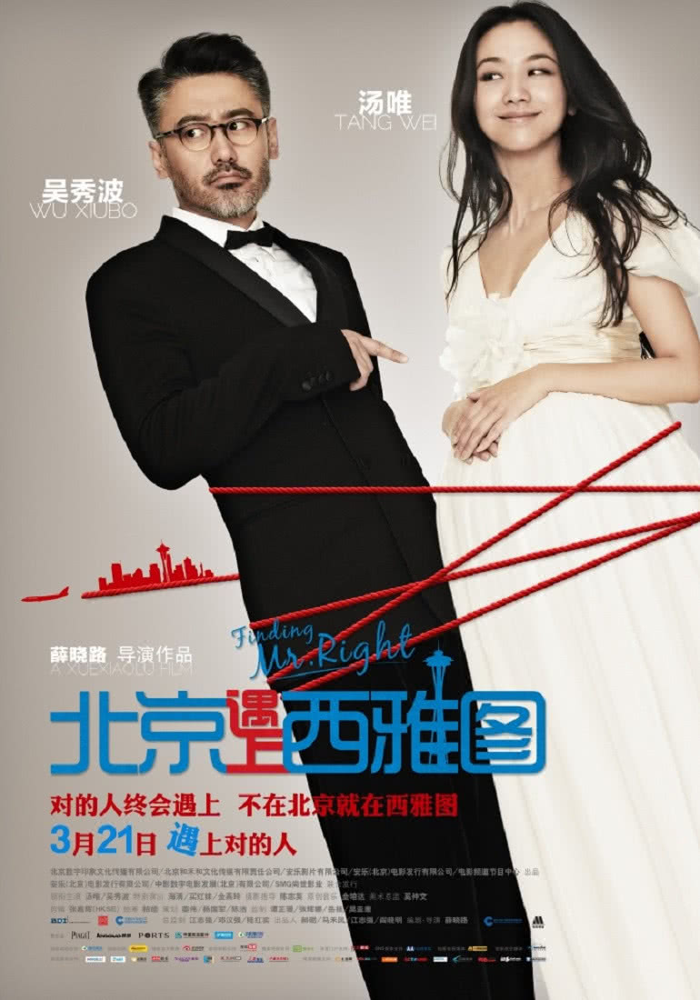
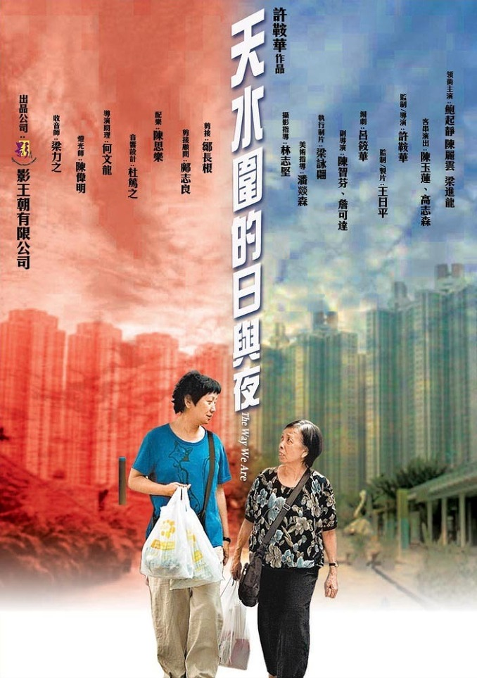
但也许看过她们的作品。
许鞍华、张艾嘉、李少红、贾玲、邵艺辉、滕丛丛、殷若昕、陈翠梅、赵婷……当这些面孔从银幕后的暗处被一张一张拎出来，拼贴在同一个画框里时，一个被忽略三十年的问题才真正显形：
华语电影狂奔的三十年，女导演们，到底在哪里？
我们收集了1996年到2026年30年间，111位华语女导演共计217部作品，使用情感分析、社会网络分析等方法，探寻她们的作品、她们的履历、她们被讨论的方式、她们被奖项加冕或被市场冷落的轨迹。
我们用数据来回答大众的疑惑
她们在哪里？不是地理意义上的"在"，是存在意义上的"在"。
——李玉，凤凰网《非常道》访谈
2019年，导演白雪带着她的处女作《过春天》亮相柏林电影节。媒体称赞"新锐女导演崛起"，但很少有人追问：白雪毕业于北京电影学院导演系，第一部作品拿了创投大奖，却依然花了整整十年才拍出这部长片。而同届的男同学，早已拍了三四部。
这不是个例，而是数据可以验证的普遍困境。我们在猫眼、灯塔影片数据库中检索1996年至2026年间上映的国产电影，共获得6598部影片，涉及活跃导演7205人次，从中整理出女导演人数、执导影片数、活跃率等数据，以回答一个最朴素的问题：
三十年来，华语女导演到底在哪里？她们的存在感真的变好了吗？
如果我们将导演按出生年代分组，会发现一个耐人寻味的现象：女性导演的代际占比在提高，但"留下来"的概率却始终低于男性。
50后女导演：活跃率23.1%，略高于同代男导演（20%）。
60后女导演：近五年活跃率为0%。这一代曾经是"中坚力量"，如今已集体淡出。
70后女导演：活跃率37.9%，略高于同代男导演（33.3%），但绝对基数小。
80后女导演：活跃率62.1%，而男导演为80%。
90后女导演：活跃率60%，而男导演为100%。
电影工业从不均匀分布在地图上。女导演的出生地，同样指向同一个答案：文化资源和产业中心，才是机会的起点。
根据统计，111位华语女导演中，大陆籍67位，台湾籍28位，香港籍16位，另有海外华裔9位（主要活跃于美国）。大陆女导演高度集中于北京（11位）、四川（7位）、浙江（6位）等省市，中西部地区、非省会城市出身的女导演极少。
而拍出第一部长片的女导演，有多少人能拍出第二部？第三部？
111位有首部作品的女导演中，仅46.8%拍出了第二部，25.7%拍出了第三部，到第五部时仅剩10.1%。超过一半的女导演在起步阶段就被淘汰。
1/2每2位女导演中，只有1位能拍出第二部电影；
1/10每10位中，才有1位能拍出第五部。
我们对50位代表性华语女导演的"教育背景—入行前职业—首作资金来源"进行编码，绘制成桑基图。可以发现，华语女导演的入行路径大多数狭窄、脆弱且高度依赖个人资源。
值得关注的是，有些常见路径对华语女导演而言却几乎不存在：
对于男导演最为常见的商业制片体系内部晋升路径，如从执行导演、第一副导演升为导演，样本中几乎为零。男性导演常见的"按部就班"升迁路径，对女性几乎不开放。
通过大型经纪公司或头部影视公司内部培养的路径同样缺失。女性导演首作大多来自独立制片、创投平台或政府扶持，而非大厂"订单"。
三十年来，华语女导演从未消失，但也从未真正走进行业的中心。她们从进入行业的那一刻起，就面临更窄的入口、更陡的留存曲线、更脆弱的资金支持。她们的身影一直在，但行业从未真正为她们铺平道路。
她们在拍什么？她们在讲述什么故事？
——邵艺辉，《爱情神话》上映后接受《人物》访谈
当越来越多的导筒交到女性手上，我们发现镜头对准的方向变了。
我们分析了女导演与男导演的作品信息，在类型分布、番位设置、女主角年龄、结局流向等层面上进行对比。
类型标签是电影工业对观众许下的第一重承诺。在华语电影市场中，女导演的作品长期被简单归类为"爱情""家庭""文艺"，但数据告诉我们，事实并非如此。
剧情片仍是主流，占比超过60%，但与此同时，喜剧、爱情、家庭、纪录片、悬疑、犯罪、同性、奇幻、运动、历史、战争、动画、短片……几乎所有主流类型中都能找到女导演的身影。
她们的类型版图远比刻板印象中丰富。这引出了一个追问：当女导演进入同一片题材战场，她们的视角和男导演到底有什么不同？
为回答这个问题，我们按照"同题材匹配"原则，为217部女导演作品逐一匹配了同类型、同时期的217部男导演作品作为对照组。当题材变量被控制，番位设置、女主角年龄、职业身份、故事结局上的差异，才真正指向导演性别的视角视野。
番位对比：谁站在故事中心？
女导演作品：近半数（49.3%）将女性置于第一番位，男性第一番位仅占26.7%，双主角/群像占24.0%。
男导演作品：超过半数（57.6%）将男性设为第一番位，女性第一番位骤降至7.4%，双主角/群像占35.0%。
值得注意的是，双主角/群像的差异中，男导演作品中的群像比例（35.0%）高于女导演（24.0%），但这并不意味着"更公平"，群像叙事往往以男性角色为核心展开，女性在其中仍多为配角或功能型角色。
女导演作品中女性担当第一主角的比例是男导演作品的6.7倍。而当男性掌镜时，女性站到故事中央的机会被压缩至不足十分之一。
番位不是审美选择，是权力分配。合作网络：女导演与女演员的"创作共同体"
在长期的行业边缘化处境中，女导演的合作圈层也更为紧缩。我们统计了女导演作品中的主演信息，筛选出与同一位女导演合作两次及以上的演员，绘制成导演-演员合作网络图。
女导演的合作网络规模较小，但连接强度高。许鞍华与鲍起静、张艾嘉与刘若英、贾玲与张小斐……这些长期的"导演-演员"搭档构成了稳定的创作共同体。相比之下，男导演的合作网络规模大但流动性强，鲜少与同一位女演员反复合作。当主流制作体系不愿为女性创作者提供足够资源时，华语女导演们便自己搭建舞台，通过反复合作积累默契、降低沟通成本、塑造稳定的银幕女性形象。
年龄与职业：什么样的女性值得被看见？
女导演与男导演的镜头，对"女性应该多大年纪站在故事中央"有着截然不同的回答。
女导演镜头下，40岁以上女性占主角的比例超过30%；而在男导演的同题材对照中，这一比例不足15%。50岁以上的女性主角在女导演作品中占14%，在男导演作品中几乎没有。
乐莹，32 岁。宅家多年后重新寻找自我，最终站上拳击台。
黄小仙，27 岁。失恋后重新振作的都市白领，结局落在情感关系。
女儿 65 岁，母亲 85 岁。高龄女儿照护患阿尔茨海默症的母亲。
枚竹，成年母亲。为救女儿卷入伦理困境，结局落在母职责任而非爱情归宿。
年龄之外，职业身份是定义女性角色的另一重维度。
女导演作品中，女主角从事专业/创意职业（记者、医生、艺术家等）的比例达36%，而男导演同题材中仅占22%；男导演作品中的女性主角更多是学生或普通职业女性（合计54% vs 女导演38%）。女导演镜头下的女性，更常以有专业能力、有创作表达权的形象出现。
结局流向：女性角色的终点在哪里？
故事如何结束，决定了角色最终被赋予的意义。
女导演的流向图中，最宽的流线指向自我实现（28%）和开放式（22%），尤其集中在"青年女性"和"中青年女性"群体。即便是"中老年/老年女性"，也出现了清晰的自我实现流向，如《出走的决心》中50岁的李红开车上路，《无依之地》中60岁的弗恩在路上找到归属。
男导演的流向图中，最宽的流线指向获得爱情（24%）和回归家庭（28%）。"青年女性"和"少女/学生"几乎被爱情和家庭收编，自我实现的路径近乎消失。
男导演为女性角色安排的终点高度集中在「获得爱情」和「回归家庭」；女导演的结局谱系更分散、更复杂，甚至更残酷，她们不承诺圆满，但提供了更多元的出口。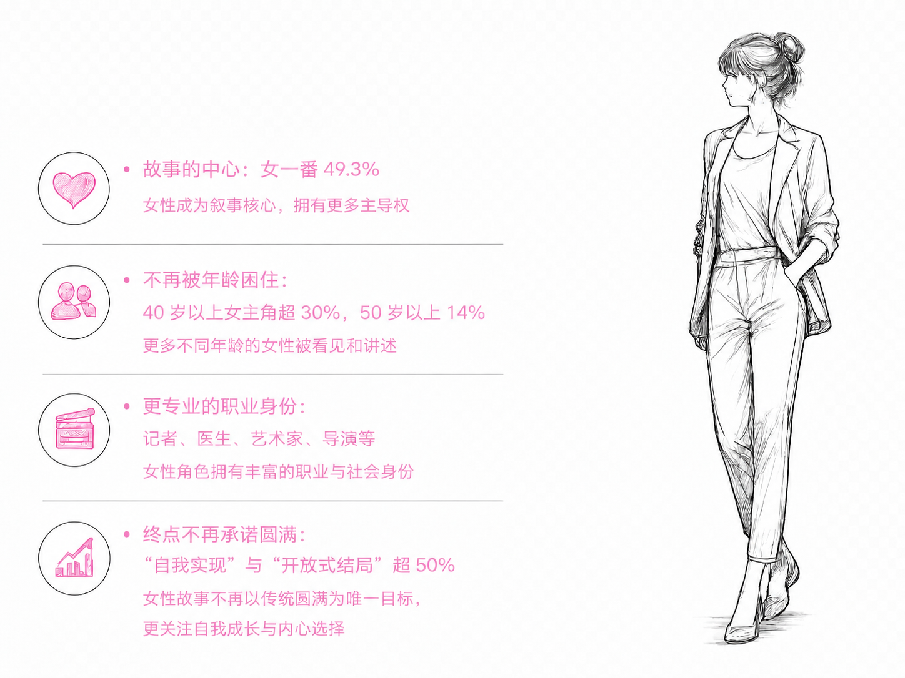
她们的作品抵达了谁？观众用什么语言谈论她们？银幕上的故事，是否溢出了电影本身？
——贾玲，《你好，李焕英》上映后采访
"看完《出走的决心》，我给我妈打了一个电话。没说别的，就问她还记不记得小时候带我去看菊展，回来时下大雨，她把外套全裹在我身上，自己淋了一路。"
——《出走的决心》豆瓣短评在电影的评论区，类似的"私人记忆"俯拾即是，观众不是在评价电影，而是在电影里看见了自己母亲、姐姐、甚至自己的影子。当银幕上的女人开始出走、反抗、和解，银幕外的观众便开始诉说、争吵、流泪。
这一部分，我们将目光从银幕转向观众。通过票房数据、豆瓣短评和社交媒体讨论，我们试图回答问题：女导演的作品在市场上被如何定价？观众用什么样的语言谈论她们？她们的故事是否溢出了电影本身，成为社会议题的一部分？
市场切片：口碑与票房的分裂
将217部女导演作品投射到"票房—评分"坐标系中，结果清晰地揭示了群体内部的分化：口碑与票房之间，远非简单的正相关。
向下滚动或点击「翻页」，逐一进入每个象限，查看对应解读。
高票房·高口碑作品数量占比不足5%。这是最稀有的象限，代表着市场与口碑的双重认可，但对于绝大多数女导演而言，这是一个难以企及的坐标。
艺术表达与大众共鸣的罕见交汇——高分与高票房同时成立。
高票房·低口碑作品影片多为都市爱情或轻喜剧类型，女导演的"高票房"往往被锁定在这少数几个"安全类型"中，类型本身主导了票房，而非导演的创作表达。
情感 IP + 档期红利推高了票房，口碑却未能同步跟进。
低票房·高口碑是最拥挤的象限。"好口碑"并未自动兑换为"好票房"，排片、宣发资源、类型偏见的层层挤压，使得女导演的优质创作难以触达大众。
小成本、高口碑的典型——在主流市场边缘被记住的独立声音。
低票房·低口碑多为早期独立电影或低成本类型片。
四个象限共同指向一个事实：女导演的创作质量与市场回报之间，横亘着排片、宣发和类型偏见构成的多重过滤网。
舆论切片：观众在谈论什么？
语言是情感的密码。观众如何谈论一部电影，往往比电影本身更能折射社会对女性叙事的期待与规训。
我们选择217部华语女导演影片中评分前50的作品，爬取了每部作品前100条短评，经过分词、去停用词和词频统计，绘制成词云图。
数据显示：观众在谈论女导演作品时，高频词高度集中于情感卷入、生活细节和人物成长，而非视觉奇观或类型快感。
"喜欢"一词出现71次，排在第一位，"表演"一词出现53次，排在第二位。观众反复提到演员的演技是否自然、到位、有感染力，说明表演本身是女导演作品叙事可信度的重要支撑。"生活"（52次）和"成长"（18次）也频繁出现，远超"爱情"或"梦想"。观众更多在讨论日常关系、代际冲突、女性如何从困境中走出来，而不是浪漫爱情或成功逆袭。
这些词语构成了一幅观众情感的底色：
她们的作品让人"喜欢"，是因为观众在表演中认出了"生活"，在故事中看见了自己的"成长"。议题溢出：从银幕到公共空间
词云揭示的是情感倾向，而长评揭示的是思想纵深。我们进一步爬取分析了豆瓣长评内容，通过关键词提取和人工编码，将讨论归纳为8个主要社会议题。以影片为中心节点、议题为外围节点，绘制议题网络图。
结果显示，女导演的电影不只是被观看和评分的对象，它们确实溢出了银幕，成为社会议题的触发器。
"母女关系"是最大节点。《你好，李焕英》《妈妈！》《春潮》三部影片贡献了半数以上讨论。观众的核心关切不是"电影好不好"，而是"我和妈妈的关系"。
"身体自主权"是近年新兴议题。《热辣滚烫》《送我上青云》《嘉年华》《春梦》分别从体重、疾病、性侵、欲望等角度切入，讨论带有鲜明的立场表达和情感宣泄，互动量显著高于其他议题。
一部影片可触发多个议题。如《我的姐姐》关联"原生家庭""母女关系""身体自主权"；《嘉年华》关联"身体自主权""原生家庭""职场性别歧视"。女导演的叙事往往是多重社会投影。
总结而言，女导演的电影在公共空间中，不只是被评分和被观看的对象。它们确实引发了超出电影本身的社会议题讨论，而且这些议题高度集中于家庭关系和女性身体权利。公共情感切片：两部电影的情感河流
当一部女导演作品真正走入大众视野，它会激起怎样的情感潮汐？我们选取了两部现象级作品——《你好，李焕英》（2021）和《出走的决心》（2024），统计其上映前一周至上映后一年的每日豆瓣长评数量与情感倾向，绘制成情感河流图，观察公共情感如何随时间涨落。
当银幕上的母亲和女儿走向和解或走向出走，银幕外的情感河流便随之涌动——那是无数观众在自己的生活里，找到了表达的出口。
当一部女导演的作品完成之后，它能否被看见、被认可、被奖励？
2023年5月，导演耿子涵的长片处女作《小白船》入围戛纳电影节"一种关注"单元，成为当年唯一入围该单元的华语女导演作品。媒体报道称"95后女导演登上国际舞台"。然而，影片最终未获任何奖项，回国后，她为第二部长片寻找投资时，仍被反复问到同一个问题："你上一部片亏了没有？"
这不是个例。我们统计了1996年至2026年华语女导演的作品数量、入围国际电影节主竞赛单元的数量及获奖数量，并与同期男导演进行对比。结果印证了一个更隐蔽的"玻璃天花板"：即使女导演的作品站上了同一赛场，被提名和获奖的概率依然更低。而当我们将视线拉向全球，会发现这并非中国特有问题。
创作的权力、被认可的权力、被投资的权力，这三重权力，三十年来，有没有真正向她们移动过？我们统计了截至2026年华语影片入围三大国际电影节（戛纳、威尼斯、柏林）主竞赛单元的情况，共计154部华语片入围，其中女导演作品仅13部，占比9.1%。从"作品"到"入围三大主竞赛"，女导演的转化率仅为男导演的1/8。
国际赛场如此，国内奖项的漏斗同样陡峭。女性占导演群体16.5%，但最佳导演奖的获奖比例仅为9.9%。将获奖数据绘制成人形漏斗，淘汰的过程一目了然。
每100位出发的女导演，最终站在领奖台上的不到3位。
全球镜像：谁让女性拿起导筒？
这并非中国特有问题，而是全球电影工业的结构性困境。
欧洲和韩国的上升曲线已经证明，制度性干预确实能改变占比，问题并非无法缓解，前提是有意识的政策介入。华语电影行业，是否愿意给出这个前提？
三重权力：它们同步移动了吗？
为了更系统地衡量女性在电影行业中的话语权变化，我们构建了一个"女性电影话语权综合指数"，包含三个子维度：创作权（女导演占比+存活率）、认可权（获奖占比+获奖转化率）、资源权（投资规模代理变量+头部项目参与率）。用雷达图呈现年度变化，可以直观看到三重权力的位移是否同步。
2000年至2020年，创作权、认可权、资源权三个指标都在上升，雷达图面积持续扩大。但2025年，认可权从35降至8，资源权从45降至13，创作权基本持平。
这意味着：更多女导演能拍到电影了，但她们的作品很难拿到奖项，也越来越难进入头部项目。奖项和资源的改善没有跟上创作端的增长，甚至出现了倒退。数据不指向"进步"或"倒退"的单一叙事，而是说明三个指标的变化并不同步。
创作端的改善，并没有自动带来认可端和资源端的改善。未完成的长镜头
但时间也记录下了另一种事实。
FIRST青年影展创投单元开始设立女性专项
山一女性电影展诞生
贾玲成为全球票房最高的女导演
《好东西》以 9.0 的豆瓣评分和 7 亿票房证明
越来越多女性拿起导筒，越来越多观众愿意为她们买单。
30年，占比翻了一倍。这个速度很慢，但方向是明确的。
每一张票、每一条评论、每一次争议、每一朵荆棘枝头的小花，都是推力。
改变不会来自某部爆款，而是来自持续的拍、持续的看、持续的说。
——张艾嘉